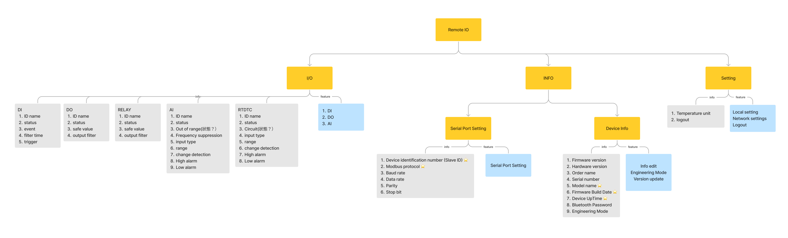
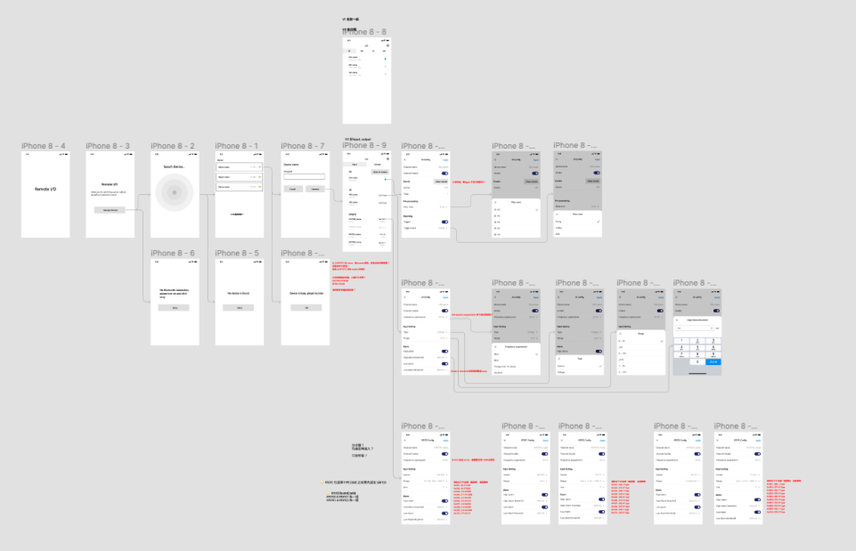

Remote IO App

Remote I/O has been used in many applications such as water tank depth, alarm switch, energy management system, etc. It supports Multiple types of inputs and outputs. Use Oring Remote I/O App, you can quickly and easily maintain, diagnose, operate and monitor by your smartphone.
Team
1 PM, 2 App Developers
Role
UI/UX Designer
Time
2022
Process
還沒寫
Integrate the practical experience of hardware and software enigneers, as well as the common using patten and user interface. I organize the information architecture of Remote I/O app. And use wireflow to confirm the framework and flow of app.
Information Architecture
Wireflow
Here is a big challenge for me to design Remote I/O app and build ui library for app at the same time. To build app ui library, I gathered all app design pattern and ui component in the past. Organizing a base version, then iterate when designing. It helped me to build user interface quickly.
The most important thing to note is that using bluetooth connection. It read address one by one, so we have to consider the time that user waiting.

Understanding the Modbus table was a big challenge for me in this project. I work with hardware and software engineers to understand the meaning of all the register address and use life experience as an analogy. In addition, the limitations and applications of using Bluetooth connectivity is another field that need to attention. Knowing this helps me with my designs and proposals.
It was the first time I made a product that needed to enter Engineering mode, and I felt very fresh. In addition to the apparent users, the product also needs to have hidden functions for engineering staff or QA testing, and the use of the orientation is very different. This project gave me experience in engineering pattern design, which will help in designing testing and troubleshooting features in the future.